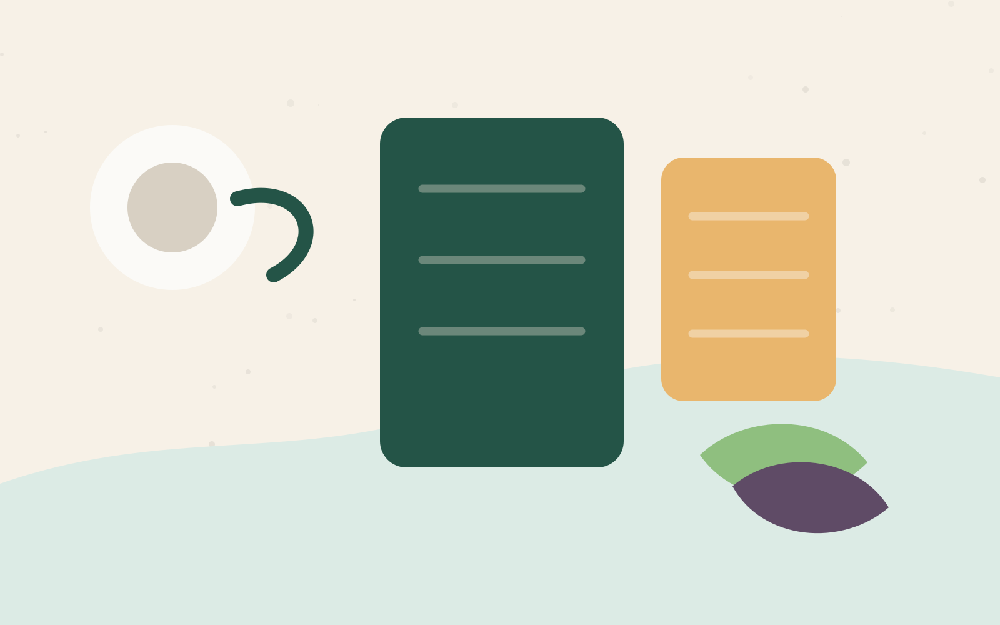

Three minutes, one useful check-in
A calm content nudge for members exploring short, low-pressure routines.

Use this editable module as a lifecycle moment starter. Teams can adapt the copy, audience logic, and experience around their idea.
Choose a routineA calm content nudge for members exploring short, low-pressure routines.